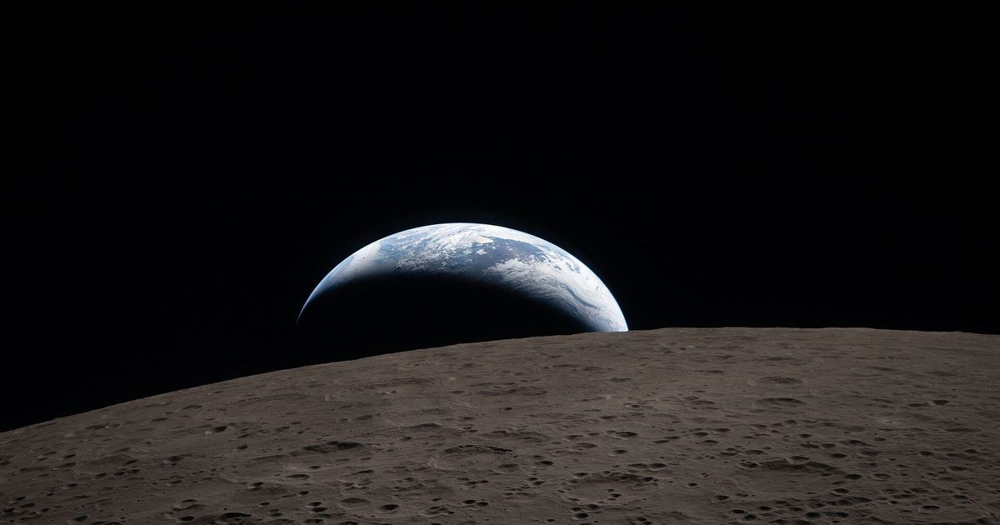

Смотрите рукописные заметки экипажа Artemis II, документирующие лунную поверхность
Людям нравится говорить, что в наших карманах больше вычислительных мощностей, чем НАСА раньше, чтобы добраться до Луны, но даже это недооценивает вещи.
У управляющего компьютера Apollo было всего четыре килобайта оперативной памяти, в то время как у iPhone 17 Pro Max - 12 гигабайт, что примерно в три миллиона раз больше.
Конечно, астронавты Артемиды II, которые посетили Луну в начале этого года, обладали самыми современными технологиями, не только размещенными в транспортном средстве, но и в их карманах.